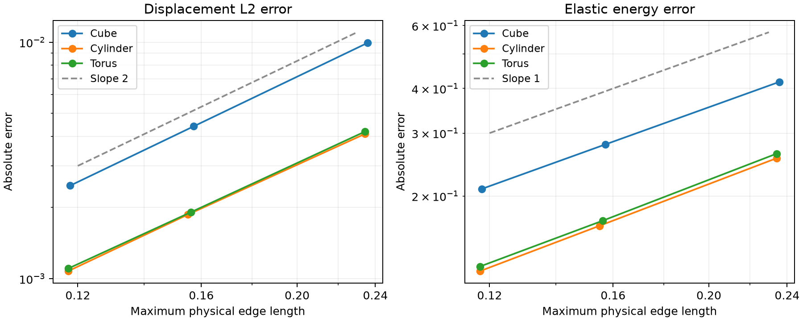

Solver verification¶
The release candidate has been exercised with an independent P1 tetrahedral linear-elasticity assembly on a cube, cylindrical gyroid sheet and toroidal gyroid sheet. Each specimen uses three background resolutions; the TPMS cases use the public Python constrained-intersection API and eight quality passes.
This is a manufactured-solution study with Lamé constants lambda = mu = 1.
The exact displacement is (sin(pi*x) sin(pi*y) sin(pi*z), 0, 0), with body
forces derived from the Navier elasticity equation and exact displacement
prescribed at every boundary node. Four-point tetrahedral quadrature integrates
the load and sampled errors. Affine displacement patch tests independently
check assembly and boundary handling on all three geometries.
| Geometry | Background levels | L2 displacement error, coarse → fine | Energy error, coarse → fine | Final observed orders, L2 / energy |
|---|---|---|---|---|
| Cube | 6, 9, 12 | 0.00994 → 0.00247 | 0.417 → 0.209 | 2.01 / 1.00 |
| Cylindrical TPMS | 12, 18, 24 | 0.00410 → 0.00108 | 0.255 → 0.123 | 1.97 / 1.05 |
| Toroidal TPMS | 12, 18, 24 | 0.00419 → 0.00110 | 0.263 → 0.127 | 1.92 / 1.03 |
Orders use the measured maximum physical edge length. Displacement errors fall approximately quadratically and energy errors approximately linearly in these runs. Affine patch L2 errors are below 3e-11 and energy errors below 1.2e-9. All physical tetrahedral volumes are positive.
SciPy conjugate gradients with a diagonal preconditioner converged for all systems, with explicitly recomputed relative residuals below 1e-10. The largest refinement has about 84,000 tetrahedra and 16,400 free displacement degrees of freedom for each TPMS specimen. The implementation checks matrix symmetry, positive diagonal entries, solver status and residuals. See the SciPy CG API for solver tolerance semantics.

Fedoo verification¶
The same nine meshes have also been solved with fedoo 0.8.4, using the
installed 0.1.0 release-candidate wheel on the same Apple M4. Fedoo constructs
its own tet4 stiffness and load assemblies through StressEquilibrium and
DistributedLoad, applies the Dirichlet conditions and solves through
problem.Linear. ElasticIsotrop(E=2.5, nu=0.25) gives the same Lamé constants.
Body forces are evaluated at fedoo's four Gauss points per element, avoiding
nodal interpolation of the analytic load.
| Geometry | Final displacement order | Final energy order |
|---|---|---|
| Cube | 2.006 | 0.997 |
| Cylindrical TPMS | 1.975 | 1.050 |
| Toroidal TPMS | 1.920 | 1.033 |
All three affine patch tests pass. Across the nine refinement solves, the fedoo displacement and energy error norms agree with a fresh independent assembly on each identical mesh to within 5e-13 relative difference. The script checks prescribed displacement values, positive signed volumes, matrix symmetry, positive diagonals and the explicitly recomputed free-equation residual. Convergence-rate assertions require final orders above 1.7 and 0.85.
Fedoo uses its supported SciPy CG backend here, with a diagonal preconditioner and the same tolerances as the independent study. Thus this checks the fedoo mesh/assembly/load/boundary-condition integration, while sharing the sparse solver backend and analytic error integration. It is not an independent test of a different linear solver. This manufactured-solution study does not exercise periodic constraints; the separate periodic homogenization study uses fedoo 1.0.0b2 to test those. See the fedoo quick start for its assembly, problem and solver interfaces.
What this establishes¶
These specimens support a useful first claim: the generated tetrahedra can produce convergent linear-elasticity solutions with the expected observed rates in this controlled setting. Merely accepting a mesh or reporting positive quality would not establish that.
The manufactured-solution study does not establish effective stiffness or Poisson ratios, nonlinear mechanics, conditioning under other material laws, or parity with Microgen's VTK/MMG pipeline. Boundary data are imposed on every boundary, including end faces; this study does not exercise rotational vector constraints in the solver. Errors are measured on each discrete polyhedral domain, so they do not isolate convergence of geometry approximation to the analytic curved domain. No MMG comparison was run.
Reproduce¶
Install the candidate wheel, NumPy and SciPy, then run from the repository:
The script includes assertions and writes docs/solver-convergence-results.json.
Source
and raw measurements
are retained with the release preparation. Measurements were made on an Apple
M4 (4 performance + 6 efficiency cores), 24 GiB RAM, macOS 26.5.1 arm64.
Timings are observations under development load, not controlled benchmarks.
To reproduce the fedoo study with the candidate wheel installed:
This writes docs/fedoo-convergence-results.json; the original independent
report is preserved. CI runs both studies and uploads both reports. The fedoo
run compares against a freshly assembled independent solution at every level.
Source
and raw fedoo measurements
include dependency versions and source/extension hashes.